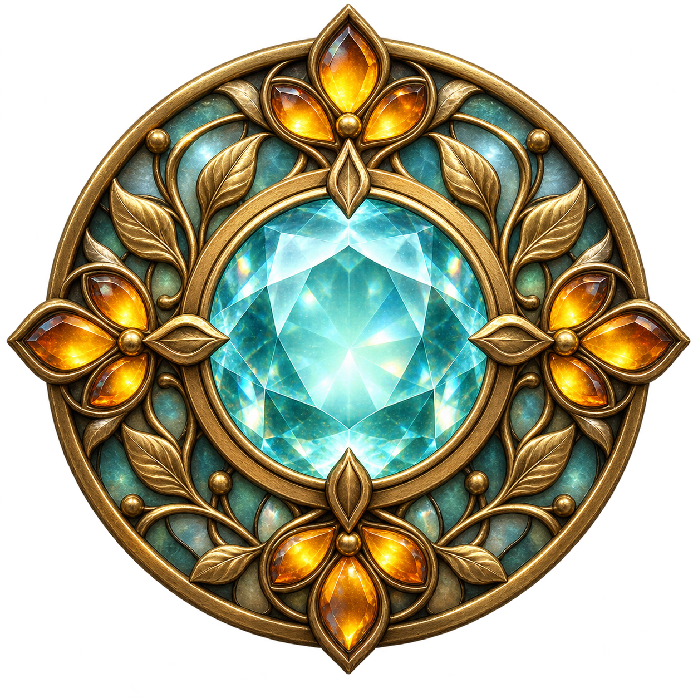

지금 이을 각도
같은 각도를 이어
모든 조각을 사용하세요.
마지막 각도
남은 조각
조각 선택 → 방향 맞추기 → 잇기진행을 저장하지 못했어요. 브라우저 저장 공간을 확인해 주세요.

열두 빛, 하나의 온실
조각 하나를 남겨 둔 선택들이 온실의 빛이 되었어요.
모든 프리즘을 모았어요! 어려웠던 판도 다른 순서로 다시 이어 보세요.
같은 각도를 이어
모든 조각을 사용하세요.
진행을 저장하지 못했어요. 브라우저 저장 공간을 확인해 주세요.

조각 하나를 남겨 둔 선택들이 온실의 빛이 되었어요.
모든 프리즘을 모았어요! 어려웠던 판도 다른 순서로 다시 이어 보세요.